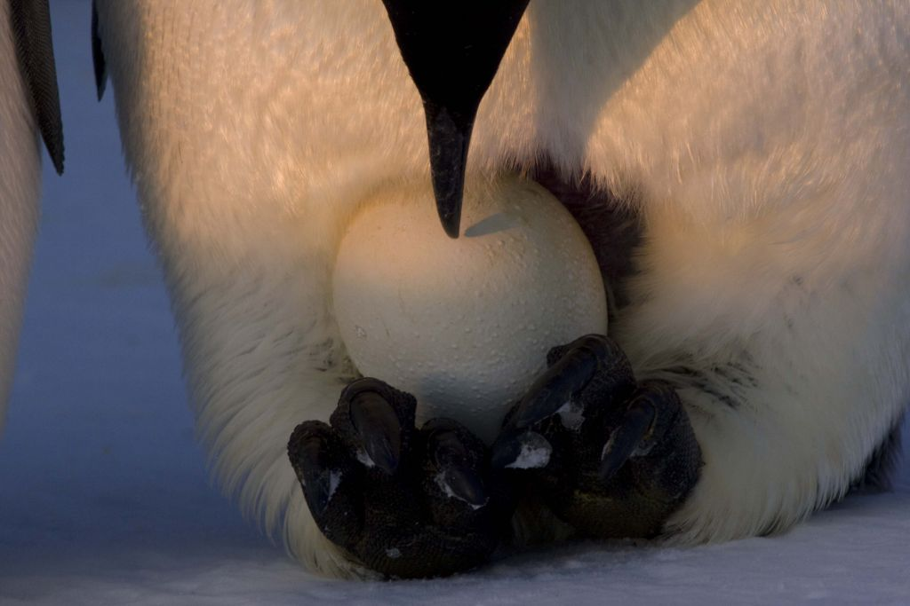
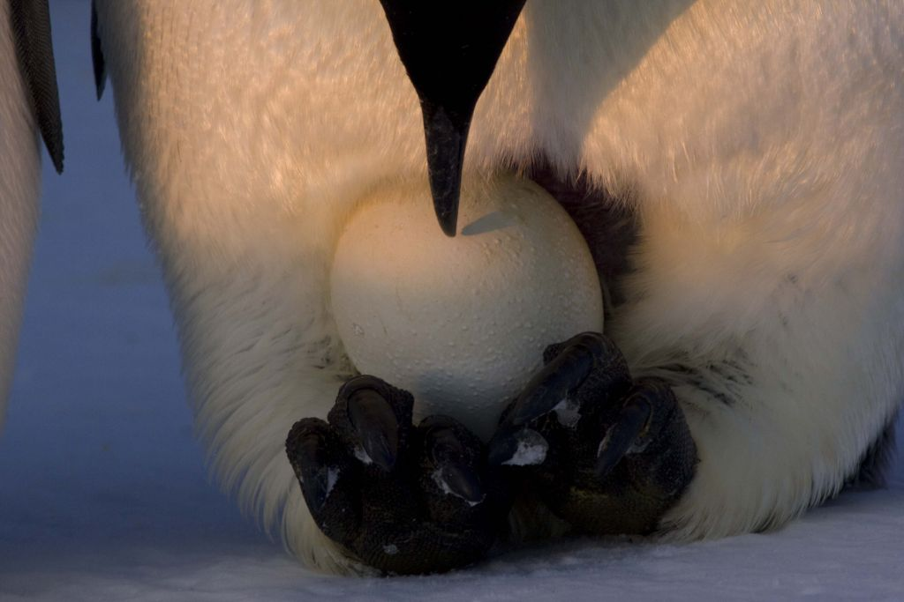

Colonies
The emperor penguin is an animal that lives in social colonies for nesting and feeding. An adult emperor penguin spends much of its time traveling between the breeding colony and the feeding grounds. In their colonies, the emperor penguins form a compact huddle of often several hundred penguins in order to keep warm. Typically the juveniles are found in the center of the huddleand the other penguins rotate, ensuring that each penguin has a chance to be in the inside or outside of the huddle.
Emperor Penguin Colonies in Antarctica
| Colony Name | Colony Area (m2) | Estimated Population |
|---|---|---|
| Cape Colbeck | ~12300 | ~11400 |
| Rupert Coast | ~1700 | ~1500 |
| Thuston Glacier, Mt Siple | ~3200 | ~3000 |
| Snowhill | ~2300 | ~2200 |
| Gould | ~8800 | ~8200 |
| Dawson | ~2700 | ~2600 |
| Halley | ~24100 | ~23500 |
| Atka | ~10400 | ~9700 |
| Dibble Glacier | ~13400 | ~12500 |
| This information was taken from research conducted by Peter T. Fretwell et al. in 2012 from pictures of penguin colonies taken from space in 2009. This information does not cover all existing penguin colonies and is not an accurate depiction of the present penguin population. | ||
Predators and Prey
The emperor penguin has several main predators, including birds and marine creatures. The Southern Giant Petrel is responsible for 1/3 of all hatchling deaths, and sometimes scavenge dead chicks. The two main adult predators are the leapord seal and orcas, both of which attack penguins in the water.
The diet of the emperor penguin is mainly fish, crustaceans, and cephalopods. The main part of their diet is comprised of Antarctic Sliverfish, although they also eat cod icefish often. In addition. they often eat species of squid incuding the Glacial Squid, and Hooked Squids in addition to the krill in the water. The penguin searches for prey in the open waters of the ocean, or in various lakes bounded by ice. They dive to about 150 meters into the ocean to find fish living near the sea bottom, and repeat this a few times before coming up for air.
Mating and Breeding
The process by which emperor penguins mate and incubate their eggs is extremely strenuous and only 19% of chicks survive their first year of life. It involves several long trips from the hunting grounds back to the breeding grounds to get food, constant watch in incubating the egg, lest it drop or crack.
- January - March: Feeding at the ocean
- April: Walk up to 150km to reach mating sites
- May: The penguins start courtship and mating
- June - July: The male penguin incubates the egg while the female goes to hunt
- August: The penguin chicks hatch and females return with food
- September: The chick is given the food by the female and the male leaves to go hunt
- October - November: Chicks start to form groups to stay warm and are no longer completely dependent on parents
- December: The parents leave the chicks
 
